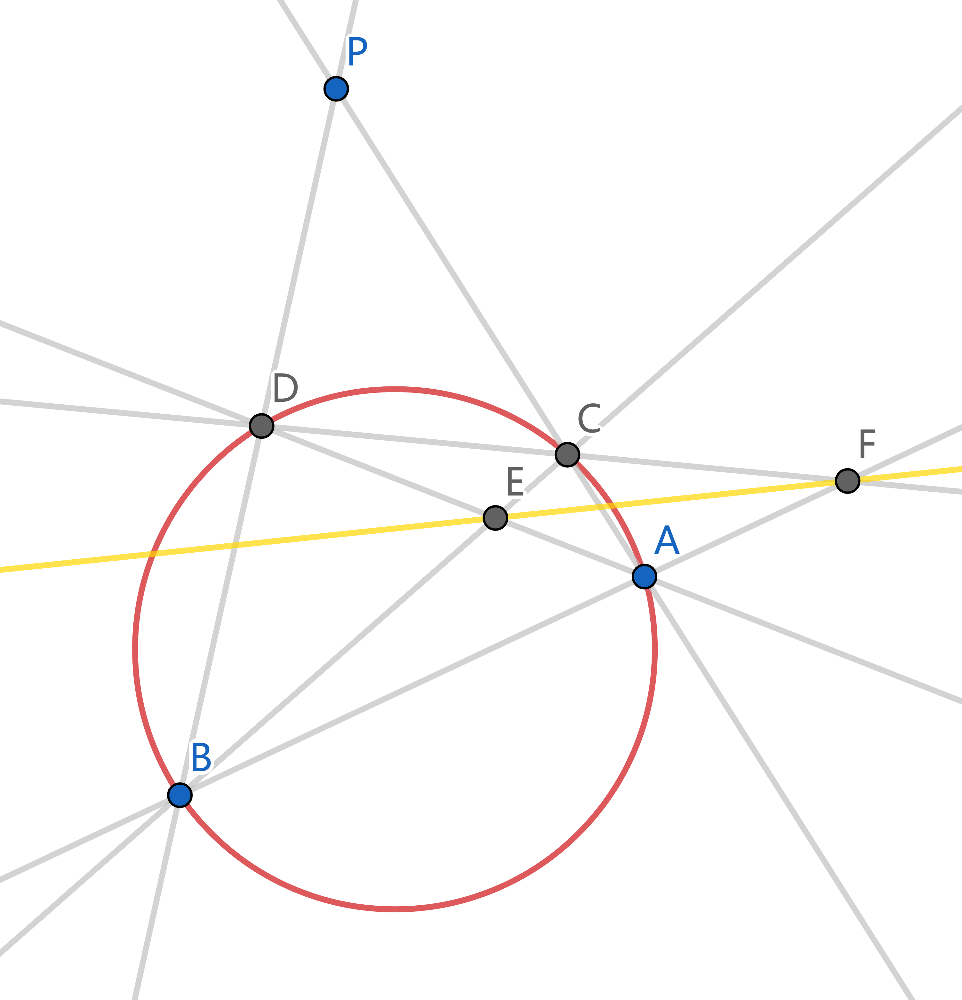
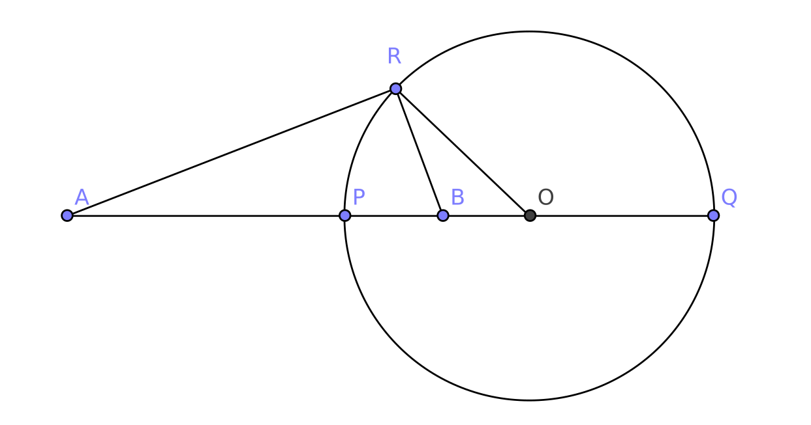
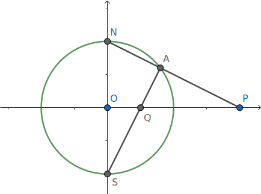

过不在圆上的一点 `P`, 只用直尺作出 `P` 关于圆的极线. 如果 `P` 在圆外, 连接 `P` 到极线与圆的交点就得到两切线.
过 `P` 作圆的两割线, 交圆于 `A, B, C, D` 四点. 这四点确定一个完全四边形, 其中一组对边交于 `P`. 设另外两组对边交于 `E, F`, 则 `EF` 就是极线. 
[群友@幂零群、@太阳花] [圆规x2, 直尺x1] 过圆上一点 `P` 作切线.
Apollonius 圆 (阿氏圆) 平面上到两定点距离之比为常数 `k` (`k gt 0`, `k != 1`) 的点的轨迹为圆. 
设这两个定点为 `A, B`, 线段 `AB` 长为 `l`.
若平面上一点 `R` 满足 `RA = k RB`,
则在直线 `AB` 上可取一点 `O`, 使得 `triangle ORA S~ triangle OBR`.
由相似关系得
`OA * OB = OR^2`.
又
`OA = (OA)/(OR) * (OR)/(OB) * OB = k^2 OB`,
`OA = OB +- l` (`k gt 1` 时取 `+`, `0 lt k lt 1` 时取 `-`),
由此解得的 `OA, OB, OR` 均可用常数 `k, l` 表示, 即 `O` 点的位置与 `OR` 的长度均为定值,
因此 `R` 的轨迹为一圆.
反演变换 设圆 `O` 的半径为 `r`. 观察上图, `A, B` 两点位于 `O` 出发的同一条射线上, 且 `OA * OB = r^2`, 我们称 `A, B` 关于圆 `O` 互为反演, `O` 为反演中心, `r` 为反演半径, 圆 `O` 称为反演的参考圆. 显然, 一个点作两次反演后的像是其自身. 反演变换的全体不动点就是参考圆上的点.
古堡朝圣 [西安交大2024强基第一问] 已知 `A(2, 0)`, `B(0, 2//sqrt 3)`, `P` 是单位圆上一动点, 求 `min(PA + 2PB)`.
反演点的作法 设点 `P` 不在圆 `O` 上. 作 `NS _|_ OP` 于 `O`, 想像 `N` 是北极, `S` 是南极, `OP` 是赤道. 现在连接 `NP` 交圆 `O` 于 `A`, 连接 `SA` 交赤道 `OP` 于 `Q`, 则 `P, Q` 关于圆 `O` 互为反演. 
由三角形 `QOS` 和 `NOP` 相似立即得到结论.
在 Geogebra 中可以用命令 Reflect about circle 来作反演.
| 反演前 | 反演后 |
|---|---|
| 不过反演中心的圆 | 仍是一个不过反演中心的圆 |
| 过反演中心的圆 | 不过反演中心的直线 |
| 过反演中心的直线 | 它自身 |
反演变换的相似比 定量地说, 如果参考圆半径为 `R`, 圆 `c` 的圆心到反演中心 `O` 的距离为 `d`, 半径为 `r`. 那么圆 `c` 到 `O` 的最近点和最远点 (距离 `d +- r`) 应该分别被映到像 `c'` 到 `O` 的最远点和最近点 (距离 `R^2/(d +- r)`). 因此, 两圆的直径之比是 `k = |(R^2//(d-r) - R^2//(d+r))/(2r)|` `= R^2/|d^2-r^2|`. 令 `r to 0`, 则 `k to R^2//d^2`.
反演变换是反向保角的 两条曲线的夹角 (交点处切线的夹角) 在反演变换后保持不变, 但角的定向发生改变 (顺时针变为逆时针).
正交圆的反演像是自身 广义圆在反演变换下的像是自身当且仅当它是参考圆, 或与参考圆正交 (夹角为直角). 一个特殊的正交情形是, 广义圆是通过反演中心的直线.
既然将直线视为特殊的圆, 我们也可以定义关于直线的反演. 为了找到点 `P` 关于直线 `l` 的反演像, 过点 `P` 作两个圆与直线 `l` 正交 (只需圆心在 `l` 上, 作出的圆就会与 `l` 正交), 则 `P` 的像必为这两个圆的另一个交点, 即点 `P` 关于直线 `l` 的对称点.
过不在圆 `O` 上的一点 `A` 可作无数个圆与圆 `O` 正交.
[群友@言, @我是阳光开朗的小白] 在圆 `O` 上任取一点 `B` 作为交点. 作圆 `O` 在 `B` 处的切线 `l`, 由正交性, 所求的圆心必定在直线 `l` 上. 但这个圆又过 `A, B` 两点, 所以它的圆心还在 `AB` 中垂线上. 取两直线交点即为所求圆心.
反演变换保持反演关系 设点 `A, B` 关于圆 `C` 互为反演, 现在将 `A, B`, 圆 `C` 一起关于另一个圆 `O` 反演, 则反演像 `A', B'` 关于圆 `C'` 仍互为反演.
过 `A` 可以作无数个圆与圆 `C` 正交, 由于正交圆的反演像是自身, 所以这些圆都通过点 `B`. 任取其中两个圆 `D, E`, 由保角性, 它们关于圆 `O` 反演后的像 `D', E'` 仍与 `C'` 正交. 而 `A', B'` 是这两个圆的交点, 因此关于圆 `C'` 互为反演.
球极投影 从反演点的作法受到启发, 考虑如下的球极投影映射: 取半径为 1, 球心在原点的单位球面, 记北极为 `N`, 南极为 `S`. 令 `xOy` 平面与赤道平面重合, `z` 轴指向北极建立空间直角坐标系. 对于球面上的任一点 `A(x, y, z)`, 作直线 `NA` 与赤道平面交于一点 `P(u, v)`. `P` 的位置也可以用复数 `u + "i"v` 来表示. 可以看到, 除北极 `N` 以外, 这建立了球面上的点到复平面上的点之间的一一对应. 假如我们规定北极与无穷远点 `oo` 相对应, 就得到扩充复平面 `CC uu {oo}` 的概念. 它与单位球面 (称为复球面) 建立了一一对应.
球极投影的坐标表示. 由三角形相似 `u = x/(1-z)`, `quad v = y/(1-z)`. 与 `x^2+y^2+z^2=1` 联立解得 `x = (2u)/(u^2 + v^2 + 1)`, `quad y = (2v)/(u^2 + v^2 + 1)`, `quad z = (u^2 + v^2 - 1)/(u^2 + v^2 + 1)`.
我们看到复球面上, 南半球的点落在复平面的单位圆内, 而北半球的点落在单位圆外. 事实上它们有一个非常简洁的对应关系:
复平面上两点 `P, Q` 关于单位圆互为反演, 当且仅当它们在复球面上的像 `hat P, hat Q` 关于赤道平面对称.
请看, 复球面上的点 `A = hat P`. 如果作出它关于赤道平面的对称点 `B`, 则 `N, Q, B` 三点共线, 这证明了 `B = hat Q`.
现在我们可以对广义圆的概念作出解释了, 下面的命题指出, 广义圆无非就是复球面上的圆.
[参见 复数与复变函数]
在复平面上, 分式线性变换 (Möbius map) 是指: `f(z) = (a z+b)/(c z+d)`, `quad a, b, c, d in CC`, `quad a d - b c != 0`. 容易看出反演变换相当于共轭变换 `z mapsto bar z` 与分式线性变换的复合. 由复变函数的知识, 分式线性变换是保角的 (保持角度的大小和定向不变), 而共轭变换是反向保角的, 所以反演变换是反向保角的.